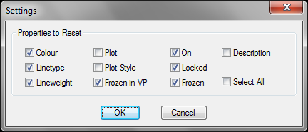

Reset XRef Layers
This page is delivered for consistency purposes only, as part of the LeeMac sample module of DynALisp, which shows how DynALisp turns existing AutoLISP programs into a module. The program and its description are the work of Lee Mac, who keeps all the credit for them. The original page, with the latest version, is on Lee Mac's website: https://lee-mac.com/resetxreflayers.html
| Function Syntax | LM-ResetXrefLayers – original syntax: RXL (see aliases) |
| Current Version | 1.2 |
| Compatible with AutoCAD for Mac? | No |
| Compatible with AutoCAD LT? | No |
| Original Page | lee-mac.com/resetxreflayers.html |
Program Description
This program enables the user to reset all or specific layer properties of xref dependent layers to match the properties present in the xref source drawing file.
Upon starting the program, the user is prompted to select an xref whose layers are to be reset. Following a valid selection, the properties of all layers dependent on the selected xref are reset to match the values found in the source drawing for the selected xref.
From the selection prompt, the user may also choose Multiple, All, or Settings. If Multiple is selected, the user may select several xrefs using the standard selection interface (e.g. via window selection). If All is selected, the layer properties of every xref found in the active drawing is reset to match the original values found in the respective source drawings.
Finally, if the Settings option is selected, a dialog interface is displayed allowing the user to choose which layer properties are to be reset.
The user may select multiple properties to be reset from the following list of layer properties:
- Colour
- Linetype
- Lineweight
- Plot
- Plot Style
- Frozen in Viewports
- On
- Locked
- Frozen
- Description
Dialog Preview

Bundled program notes
;;----------------------=={ Reset XRef Layers }==-----------------------;;
;; ;;
;; This program enables the user to reset all or specific layer ;;
;; properties of xref dependent layers to match the properties ;;
;; present in the xref source drawing file. ;;
;; ;;
;; Upon starting the program, the user is prompted to select an xref ;;
;; whose layers are to be reset. Following a valid selection, the ;;
;; properties of all layers dependent on the selected xref are reset ;;
;; to match the values found in the source drawing for the selected ;;
;; xref. ;;
;; ;;
;; From the selection prompt, the user may also choose 'Multiple', ;;
;; 'All', or 'Settings'. ;;
;; ;;
;; If 'Multiple' is selected, the user may select several xrefs using ;;
;; the standard selection interface (e.g. via window selection). ;;
;; ;;
;; If 'All' is selected, the layer properties of every xref found in ;;
;; the active drawing is reset to match the original values found in ;;
;; the respective source drawings. ;;
;; ;;
;; Finally, if the 'Settings' option is selected, a dialog interface ;;
;; is displayed allowing the user to choose which layer properties ;;
;; are to be reset. ;;
;; ;;
;; The user may select multiple properties to be reset from: Colour, ;;
;; Linetype, Lineweight, Plot, Plot Style, Frozen in Viewports, On, ;;
;; Locked, Frozen, & Description. ;;
;; ;;
;;----------------------------------------------------------------------;;
;; Author: Lee Mac, Copyright © 2014 - www.lee-mac.com ;;
;;----------------------------------------------------------------------;;
;; Version 1.0 - 2011-11-19 ;;
;; ;;
;; - First release. ;;
;;----------------------------------------------------------------------;;
;; Version 1.1 - 2011-11-27 ;;
;; ;;
;; - Added code to search for XRef Source File in working directory & ;;
;; support directories if not found at XRef Path. ;;
;;----------------------------------------------------------------------;;
;; Version 1.2 - 2014-04-13 ;;
;; ;;
;; - Program entirely rewritten. ;;
;; - Modified program to account for layers whose colour property ;;
;; uses a True Colour or Colour Book colour. ;;
;;----------------------------------------------------------------------;;
Command Names And Aliases
As in every DynALisp module, each program of this sample module has one main command, named LM-*, and the original command names of Lee Mac's page are kept as its aliases: they run the same command, and can be added, renamed or removed in Dyl-Suite (saved in Resources\Aliases.csv).
| Command | Aliases | Name |
|---|---|---|
| LM-ResetXrefLayers | RXL | Reset Xref Layers |